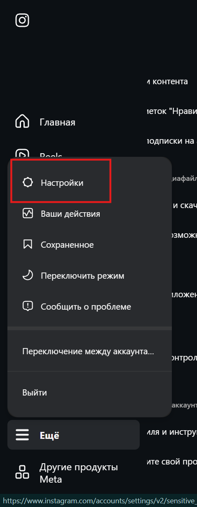
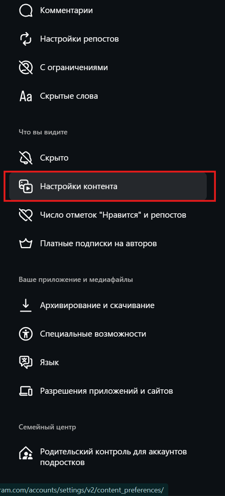
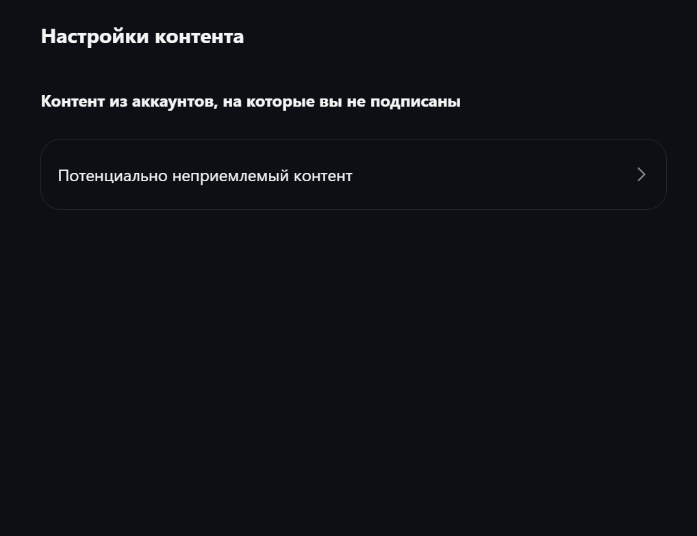
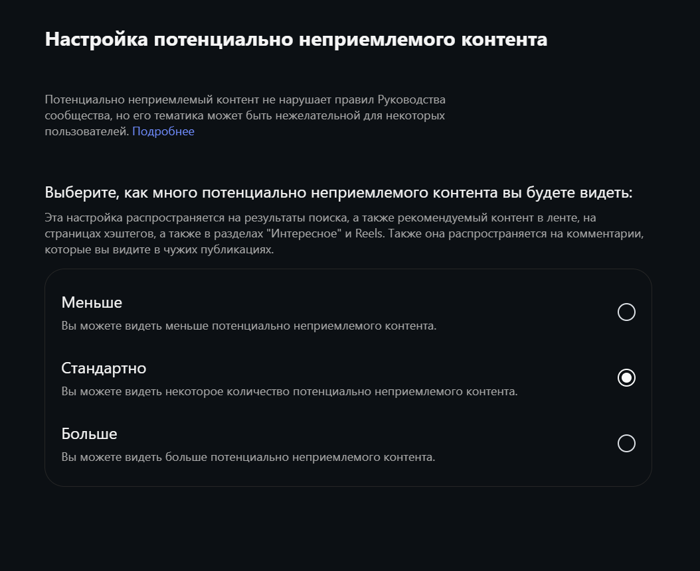

Проверь рекомендации
В меню рекомендованной публикации выбери "Почему вы видите эту публикацию?", если этот пункт доступен. Там же можно отметить "Не интересует".
Настрой фильтр контента
На компьютере можно выбрать, сколько потенциально неприемлемого контента Instagram будет показывать. Эта настройка регулирует показ такого контента и не сбрасывает рекомендации.
- В боковом меню нажми "Ещё", затем "Настройки"

- В разделе "Что вы видите" выбери "Настройки контента"

- Открой "Потенциально неприемлемый контент"

- Выбери "Меньше", "Стандартно" или "Больше" из доступных вариантов



Начни подбор заново
Для сброса рекомендаций открой мобильное приложение.
- Открой профиль и нажми ☰
- Открой "Предпочтения контента"
- Выбери сброс рекомендованного контента, если этот пункт доступен
Сброс касается рекомендаций в ленте, Reels и разделе поиска. После сброса Instagram снова подбирает рекомендации по твоим действиям. Инструкция Meta ↗